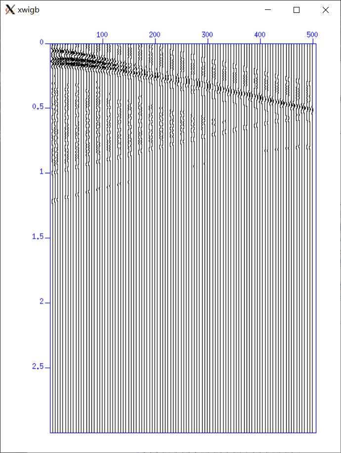
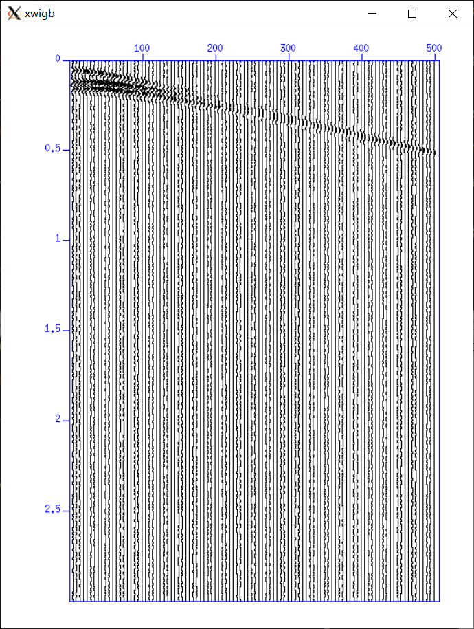
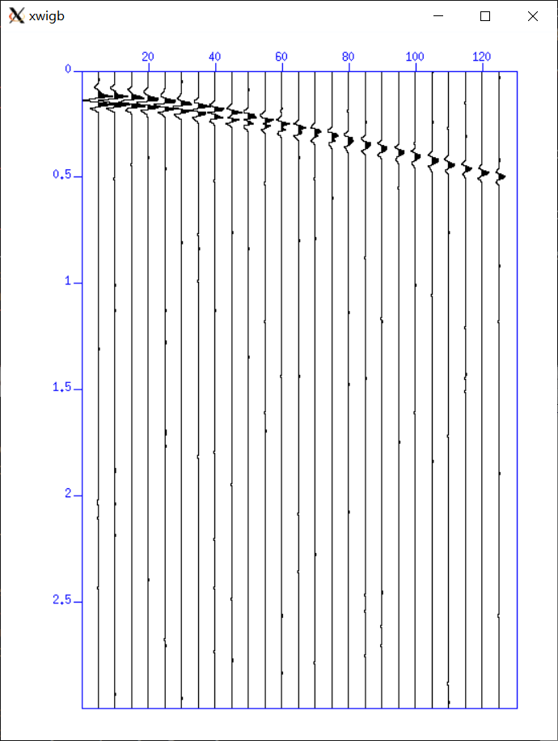
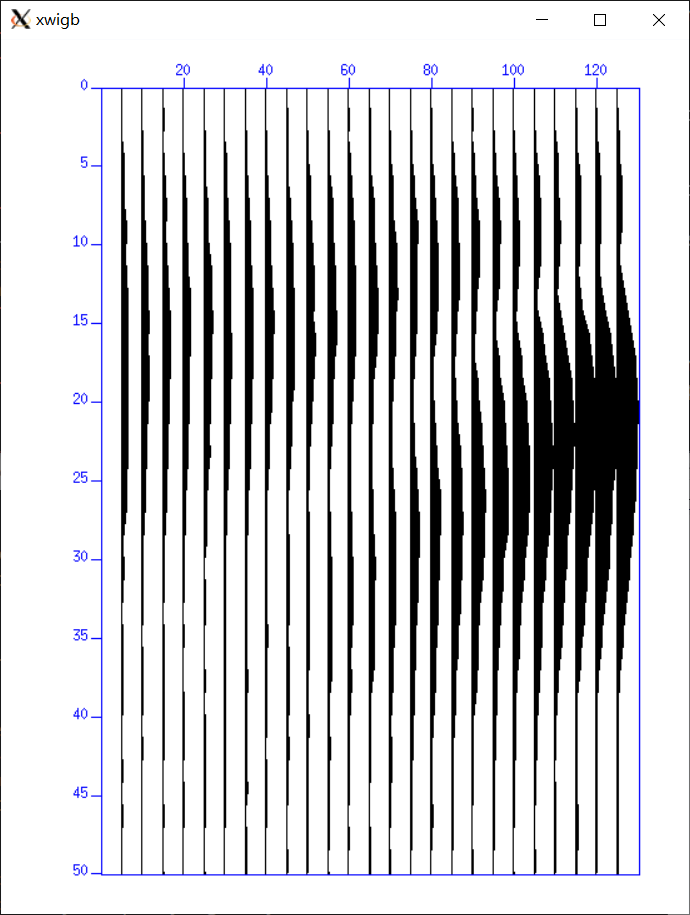
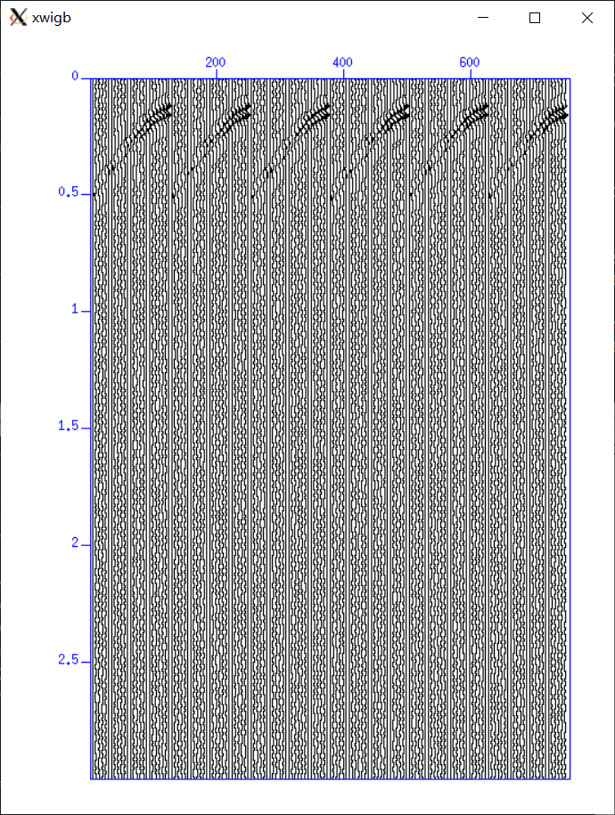
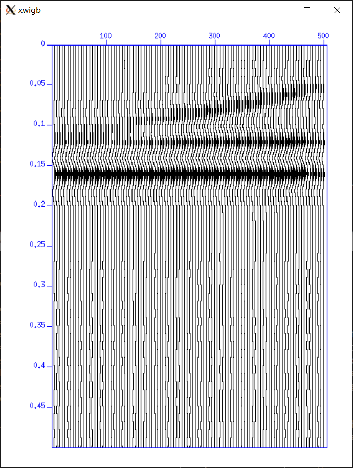
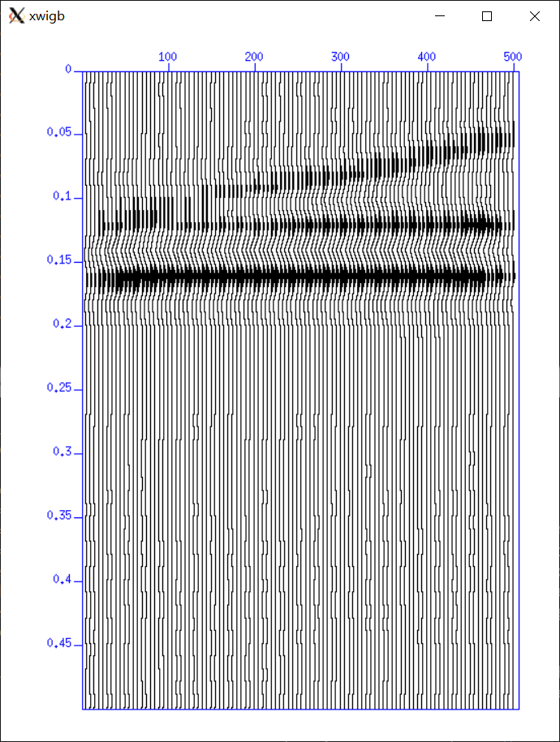

多次覆盖反射波法模拟数据处理
CWPSU模拟反射波数据处理
前情提要
之前我们获得一个dataraw.su的反射波模拟数据，我们还需要对它进行处理，以此来获得地层信息。对此有疑问的可以查看上次博客。
这是上次的链接：
我是个链接
我们说过100道，25次覆盖。我们最初是打了25炮，这样只有4个点满足25次覆盖。4个点不足以反映地下介质的信息。因此：
我们调整nxs=49。保持其他的参数不变，即打了49炮，那么我们有（49-24）×4=100个满足25次覆盖的点了。
另外我们会在最后给出高度整合的shell脚本和刘猛学者的自动完成CDP覆盖次数的脚本。您可以点击前去查看，不过我们还是建议您看完全文以便您修改部分参数使得让重复率降低，从而避免不必要的麻烦。
预处理
加噪
我们用正演生成的数据是不含有噪声的数据，为此需要认为加一个噪声，显得很真实（确信了）
我们键入
1 | suaddnoise <dataraw.su sn=70 noise=gauss seed=5 >data.noise |
Notes: sn 代表信噪比 noise代表噪声分布，这里选择高斯噪声 seed是随机分布种子（Matlab里应该也有相似的设定）
结果如下：
没加噪声

添加噪声：

其实除了显得真实没啥用。。。
抽道选排
我们需要将获得的4900道记录以CDP道集的形式展示出来。所以我们可以键入
1 | suchw <data.noise key1=cdp key2=gx key3=sx b=1 c=1 d=2 >data.suchw |
对于suchw的用法，大家可以参考自带的文档
1 | sudoc suchw |
这里限于篇幅不展开了
这样相对于我们的记录又有了一个新的地标CDP，大家可以理解为乘坐高铁等车时地下的好几个颜色的地表，现在我们加了一个叫CDP的地标。
我们希望乘客们按照CDP地标来排序，键入：
1 | susort<data.suchw cdp >data.cdp |
我们查看CDP地标，看看那些地标前的人数满足25个
1 | sugethw<data.cdp cdp |
在这里我们安利一波刘猛学者的做法，他将终端打印出来的数据存入文件中，编写一个shell来计算每一个CDP出现的次数，这样子做到了自动化计算满足25次覆盖的点。
我们看到在247（其实是247.5）到495这100个地标上有25个人
我们将这些满足的地标单独取出来
1 | suwind <data.cdp key=cdp min=247 max=495 > data.suc |
我们展示247-260间的图像：
参数分析处理
频谱分析
对于频谱分析，我们选取CDP=247的道集作为例子
首先我们单独取出247的记录：
1 | suwind <data.suc key=cdp min=247 max=247 >data247.suc |
键入：
1 | susort<data247.suc gx | suxwigb |
让25道记录按照检波点的距离以此排开来，作图如下：

我们用suspecfx进行频谱分析，设定时间域0-0.6s
键入：
1 | suwind <data247.suc tmin=0 tmax=0.6 |suspecfx | suxwigb |

可以看到频率大致分为两拨，一波在高频25-40Hz，应该是来自浅表的一层介质，另一波在5-20Hz，应该是深度一些的信息。
我们同样保存一下频率信息，后面可能需要：
1 | suwind <data247.suc tmin=0 tmax=0.6 |suspecfx >data247.fre |
滤波
我们采取比较一般的带通滤波，设置4个参数，分别代表梯形的四个拐点
1 | sufilter <data.suc f=5,10,35,40 amps=0,1,1,0 >data.filter |

速度谱
原理参见《地震勘探》P211页，这里不展开了。
我们给出suvelan的用法：
1 | SUVELAN - compute stacking velocity semblance for cdp gathers |
我们需要的参数为nv dv fv分别是速度采样数，间隔，初始值。
因为我们设的地层为1000，1700，2300
所以我们三个参数设为nv=70 dv=20 fv=1000
键入：
1 | suvelan <data.filter nv=70 dv=20 fv=1000 >data.velan |
常规处理
动校正
键入：
1 | sunmo<data.filter tnmo=0 vnmo=1000 >data.nmo |
其中vnmo=你速度谱分析的速度
水平叠加
键入
1 | susort<data.nmo |sustack >data.stack key=cdp |
你可画图
1 | suxwigb<data.stack |

解释处理
偏移
键入：
1 | sumigtk<data.stack dxcdp=2.5 vmig=1000 >data.mig |
这里dxcdp=你cdp之间的间隔
得到：

其实变化不大。
结论
我们能够明显的看出有三层介质，但是我们的模型是中间凹的，我们的成像是只有左边凹的，可能有的同学认为我们的错误了，其实不然。
因为我们的CDP起始点恰好位于我们的中心，这就导致了我们的成像只有模型的右边。
如果你想获得一个完全匹配的地层，那么你可以设计CDP道集起始点在模型的起始点。需要设计偏移距为负值，当然这是后话了。
我们在这里给出全部的自动化的脚本，您只需新建一个shell
1 | vim sum.sh |
把下列代码写入，再运行即可。
运行一下就可以获得全套数据，不过强烈建议修改部分参数使得重复率降低！
1 | constant parameters |
这里再给出刘猛学者的自动拾取满足覆盖要求点数的shell
1 | sugethw <data.cdp cdp >cdpsumfile |
用法：
在终端执行该命令，即可显示。左边为CDP号，右边为覆盖次数
预告
其实在速度谱图中，我们发现存在一些问题，一些参数不太匹配，目前还在处理中，不过无伤大雅，在这里我们向那些没有实践过就完全照抄，甚至误导他人，完全不解释参数，拼接图片的网上方法表示遗憾。因为，我们发现这些错误从08级就开始，我们希望它能够在此被终结！
那么关于CWPSU反射的内容就算是全部完结了，感谢猛哥等人给予的关键意见。前前后后好几篇CWPSU的博客，大家都可以参考，不过限于时间和水平，难免纰漏和错误。感谢大家的陪伴，再会！
Comments